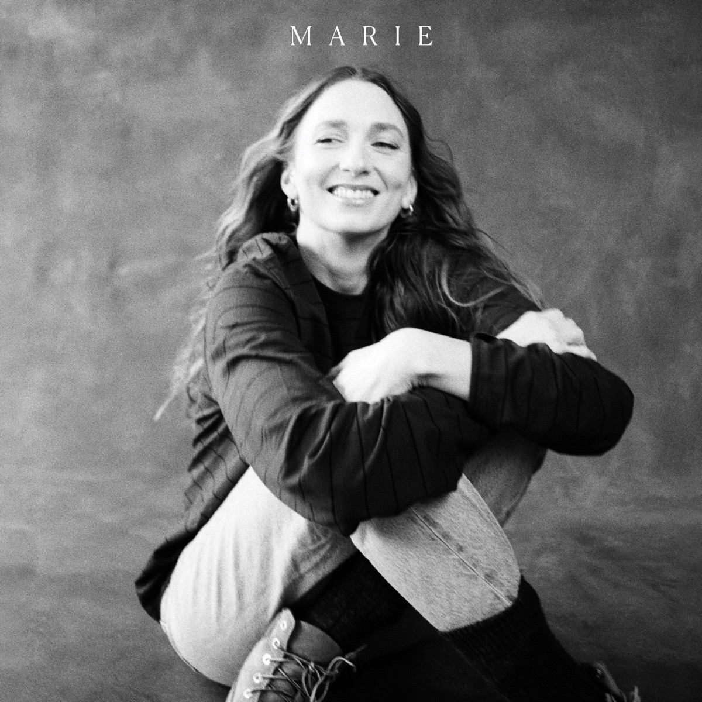
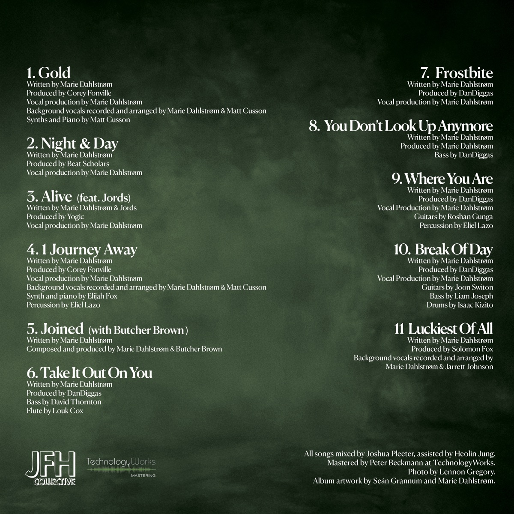

Her self-titled record — out 2026 on JFH Collective.
Her self-titled record moves between smoke and quiet light — soul recorded with a live band and a close circle of collaborators, mixed by Joshua Pleeter and mastered at TechnologyWorks. Out 2026 on JFH Collective.

On the vinyl the sides run a little differently: Side A closes with Frostbite (20:17) and Side B opens with Take It Out On You.
Her third album MARIE arrives at a moment when life has become fuller, busier and infinitely more complex. Since her previous releases, Dahlstrøm has become a mother of two while continuing to build a life between London and Copenhagen.
Written over the past two years between London, Copenhagen and Los Angeles, the self-titled record draws on deeper jazz influences, live instrumentation and a close-knit international cast of collaborators, including Corey Fonville of acclaimed Richmond jazz collective Butcher Brown, Los Angeles pianist and producer Elijah Fox, Cuban percussionist Eliel Lazo, and her longtime collaborator (and partner in life) DanDiggas, resulting in Dahlstrøm's warmest and most personal work to date.
Marie Dahlstrøm splits her life between Copenhagen and London, writing and producing a strain of soul critics have called some of the most essential in underground R&B. Praised by Billboard, NPR, NYLON and Complex, and a five-time winner at the Scandinavian Soul Music Awards.
From her 2020 debut Like Sand to 2023's A Good Life and now the self-titled MARIE, her music trades in intimacy — a voice that does everything by seeming to do almost nothing at all.
Albums, EPs and renditions — recorded between Copenhagen, London & LA.
Two shows for the album. Tickets go on sale shortly — get on the list and you'll hear first.
Quote goes here.
Quote goes here.
Quote goes here.
Marie's independent home for releases, merch and the wider JFH Global Network — an artist-owned world, built the way it should be.
Visit the Store ↗